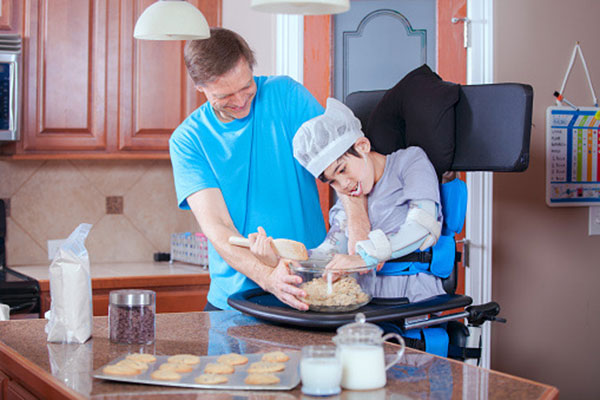
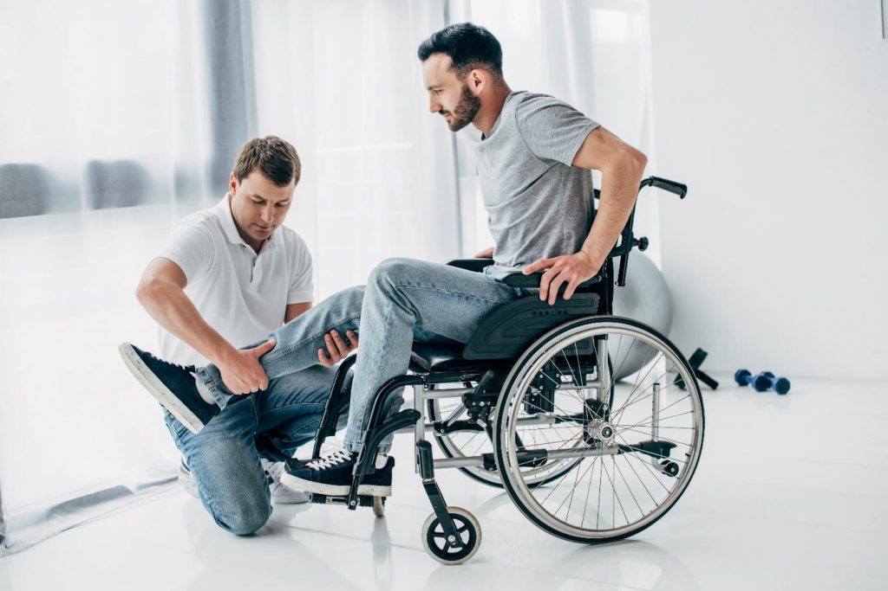

Our Approach
Every service we provide begins with understanding your unique goals, preferences and needs. We work collaboratively with you to design supports that align with your plan and personal aspirations.
Personal care and household support to help you maintain independence at home. Our support workers assist with meal preparation, personal hygiene, domestic tasks and more.
Explore ServicesSupported accommodation and home modifications that enable you to live independently. We assist with both, from finding the right housing option to making your current home accessible for a safer and more independent life..
Explore ServicesAllied health services use a range of therapies, like physiotherapy and occupational therapy, to help improve a person's physical and mental abilities, enhancing their function, mobility, and overall wellbeing.
Explore ServicesCommunity participation involves joining social and recreational activities like sports or clubs to build connections, develop new skills, and become more included in your local community..
Explore ServicesNursing support providing personalized care. We offer expert assistance with medication, recovery, and daily health management, ensuring comfort and independence for you at home.
Explore ServicesOur Respite Care service offers temporary relief to primary caregivers, providing them with a much-needed break while ensuring that your loved one receives compassionate, professional care in a safe and support.
Explore Services
Daily Living Supports
Our daily living supports help you maintain independence at home while developing essential life skills. Services are tailored to your specific needs and delivered by compassionate support workers.
Home & Living
Our SIL services provide 24/7 support in shared or individual accommodation settings. We focus on creating homes where you can develop independence while having the right level of support available.

Therapeutic Supports
Our team of qualified therapists provide evidence-based interventions to help you achieve functional goals and improve quality of life. Services can be delivered in your home, community, or via telehealth.
Our team can help you understand your plan and identify the supports that best match your goals
Get Personalized Advice